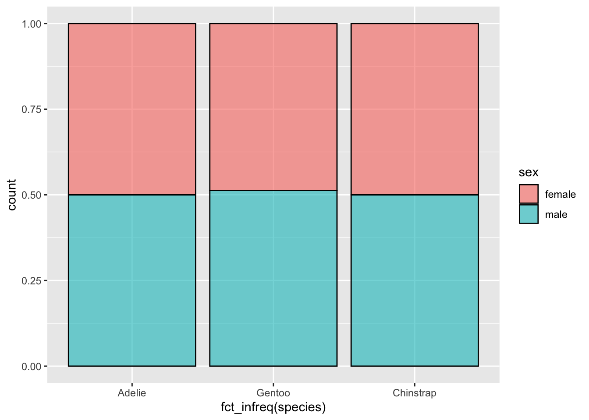
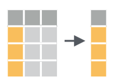
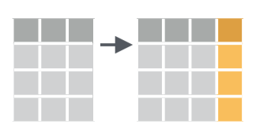
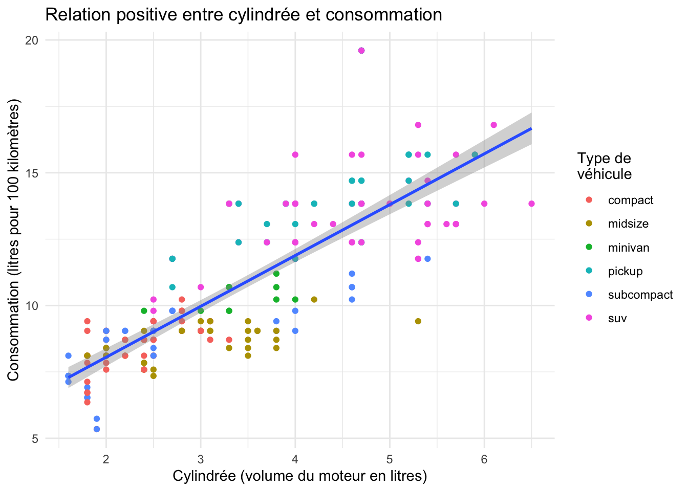
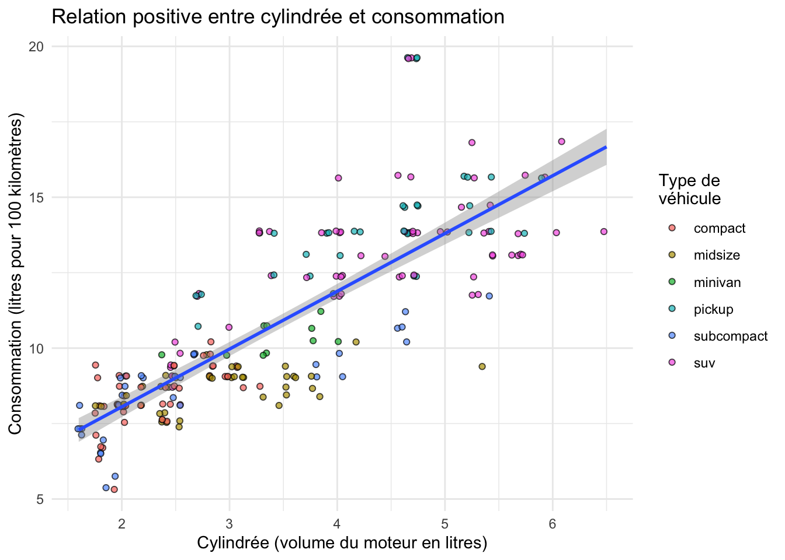

Nous abordons ici une étape essentielle de toute analyse de données : la manipulation de tableaux, la sélection de lignes, de colonnes, la création de nouvelles variables, etc. Bien souvent, les données brutes que nous importons dans R ne sont pas utiles en l’état. Il nous faut parfois sélectionner seulement certaines lignes pour travailler sur une petite partie du jeu de données. Il nous faut parfois modifier des variables existantes (pour modifier les unités par exemple) ou en créer de nouvelles à partir des variables existantes. Nous avons aussi très souvent besoin de constituer des groupes et d’obtenir des statistiques descriptives pour chaque groupe (moyenne, écart-type, erreur type, etc). Nous verrons dans ce chapitre comment faire tout cela grâce au package dplyr qui fournit un cadre cohérent et des fonctions simples permettant d’effectuer tous les tripatouillages de données dont nous pourrons avoir besoin.
Dans ce chapitre, nous aurons besoin des packages suivants :
library(dplyr)
Attachement du package : 'dplyr'
Les objets suivants sont masqués depuis 'package:stats':
filter, lag
Les objets suivants sont masqués depuis 'package:base':
intersect, setdiff, setequal, union
library(ggplot2)library(palmerpenguins)
4.2 Le pipe %>%
Avant d’entrer dans le vif du sujet, je souhaite introduire ici la notion de “pipe” (prononcer à l’anglo-saxonne). Le pipe est un opérateur que nous avons déjà vu apparaître à plusieurs reprises dans les chapitres précédents sans expliquer son fonctionnement.
Le pipe, noté %>%, peut être obtenu en pressant les touches ctrl + shift + M (ou cmd + shift = M sous MacOS) de votre clavier. Il permet d’enchaîner logiquement des actions les unes à la suite des autres. Globalement, le pipe prend l’objet situé à sa gauche, et le transmet à la fonction situé à sa droite. En d’autres termes, les 2 expressions suivantes sont strictement équivalentes :
# Ici, "f" est une fonction quelconque, "x" et "y" sont 2 objets dont la fonction a besoin.# Il s'agit d'un exemple fictif : ne tapez pas ceci dans votre script !f(x, y)x %>%f(y)
Travailler avec le pipe est très intéressant car toutes les fonctions de dplyr que nous allons décrire ensuite sont construites autour de la même syntaxe : on leur fournit un data.frame (ou encore mieux, un tibble), elles effectuent une opération et renvoient un nouveau data.frame (ou un nouveau tibble). Il est ainsi possible de créer des groupes de commandes cohérentes qui permettent, grâce à l’enchaînement d’étapes simples, d’aboutir à des résultats complexes.
De la même façon que le + permet d’ajouter une couche supplémentaire à un graphique ggplot2, le pipe %>% permet d’ajouter une opération supplémentaire dans un groupe de commandes.
Pour reprendre un exemple de la Section 3.7.1 sur les diagrammes bâtons empilés, nous avions utilisé ce code :
penguins %>%filter(!is.na(sex)) %>%ggplot(aes(x =fct_infreq(species), fill = sex)) +geom_bar(alpha =0.6, color ="black", position ="fill")
Ligne par ligne, voilà la signification de ce code :
“Prend le tableau penguins, puis…”
“transmets-le à la fonction filter() pour éliminer les lignes pour lequel le sexe est inconnu, puis…”
“transmets le résultat à la fonction ggplot() pour en faire un graphique”
On aurait pu faire la même chose ainsi :
penguins_clean <-filter(penguins, !is.na(sex))ggplot(penguins_clean, aes(x =fct_infreq(species), fill = sex)) +geom_bar(alpha =0.6, color ="black", position ="fill")
C’est strictement équivalent. La deuxième méthode à l’inconvénient de nous obliger à créer un objet intermédiaire (que j’ai ici nommé penguins_clean). Lorsque l’on a de nombreuses fonctions à enchaîner, il faut donc créer de nombreux objets intermédiaires dont nous n’avons besoin qu’une seule fois, ce qui peut être source de nombreuses erreurs.
Une troisième façon de procéder est la suivante :
ggplot(filter(penguins, !is.na(sex)), aes(x =fct_infreq(species), fill = sex)) +geom_bar(alpha =0.6, color ="black", position ="fill")

Cette fois, on ne crée plus d’objet intermédiaire, mais on intègre directement la fonction filter() à l’intérieur de la fonction ggplot(). Le code devient un peu moins lisible, et quand ça n’est pas deux fonctions mais 4, 5 ou plus que nous devons enchaîner, procéder ainsi est la garantie que des erreurs seront commises et qu’elles seront très difficiles à corriger.
On préfère donc toujours utiliser le pipe qui a le mérite de placer chaque fonction sur une nouvelle ligne, et de permettre une lecture plus simple du code, ligne par ligne, étape par étape, et non de façon imbriquée, de l’intérieur d’une commande vers l’extérieur :
penguins %>%filter(!is.na(sex)) %>%ggplot(aes(x =fct_infreq(species), fill = sex)) +geom_bar(alpha =0.6, color ="black", position ="fill")
Notez bien qu’avec le pipe le premier argument de la fonction des fonctions filter() et ggplot() ont disparu : le pipe a fourni automatiquement à filter() les données du tableau penguins. Il a ensuite fourni automatiquement à ggplot() les données modifiées par la fonction filter().
Comme pour le + de ggplot2, il est conseillé de placer un seul pipe par ligne, toujours à la fin, et de revenir à la ligne pour préciser l’étape suivante.
Toutes les commandes que nous utiliserons à partir de maintenant reposeront sur le pipe puisqu’il permet de rendre le code plus lisible.
4.3 Les verbes du tripatouillage de données
Nous allons ici nous concentrer sur les fonctions les plus couramment utilisées pour manipuler et résumer des données. Nous verrons 4 verbes principaux, chacun correspondant à une fonction précise de dplyr. Chaque section de ce chapitre sera consacrée à la présentation d’un exemple utilisant un ou plusieurs de ces verbes.
Les 4 verbes sont :
filter() : choisir des lignes dans un tableau à partir de conditions spécifiques (filtrer).
arrange() : trie les lignes d’un tableau selon un ou plusieurs critères (arranger).
select() : sélectionner des colonnes d’un tableau.
mutate() : créer de nouvelles variables en transformant et combinant des variables existantes (muter).
Toutes ces fonctions, tous ces verbes, sont utilisés de la même façon : on prend un data.frame, grâce au pipe, on le transmet à l’une de ces fonctions dont on précise les arguments entre parenthèses, la fonction nous renvoie un nouveau tableau modifié. Évidemment, on peut enchaîner les actions pour modifier plusieurs fois le même tableau, c’est tout l’intérêt du pipe.
Enfin, gardez en tête qu’il existe beaucoup plus de fonctions dans dplyr que les 4 que nous allons détailler ici. Nous verrons parfois quelques variantes, mais globalement, maîtriser ces 4 fonctions simples devrait vous permettre d’aborder sereinement le premier semestre de la L2. Nous verrons d’autres fonctions de dplyr plus avancées, permettant notamment d’associer plusieurs data.frames et de calculer des résumés numériques des données au semestre prochain, lorsque nous commencerons a nous intéresser à l’analyse statistique des données.
4.4 Filtrer des lignes avec filter()
4.4.1 Principe
Schéma de la fonction filter() tiré de la ‘cheatsheet’ de dplyr et tidyr
Comme son nom l’indique, filter() permet de filtrer des lignes en spécifiant un ou des critères de tri portant sur une ou plusieurs variables. Nous pouvons ainsi créer un nouveau tableau ne contenant que les données de l’espèce Adélie :
d’indiquer le nom du nouvel objet dans lequel les données modifiées seront stockées (ici, peng_adelie)
d’indiquer de quel objet les données doivent être extraites (penguins)
de passer cet objet à la fonction suivante avec un pipe %>%
Le premier argument de la fonction filter() doit être le nom d’un data.frame ou d’un tibble. Ici, puisque nous utilisons le pipe, il est inutile de spécifier cet argument : c’est ce qui est placé à gauche du pipe qui est utilisé comme premier argument de la fonction filter(). Les arguments suivants constituent la ou les conditions qui doivent être respectées par les lignes du tableau de départ afin d’être intégrées au nouveau tableau de données. Jetez à nouveau un œil à la Section 1.3.4.2 si vous ne vous rappelez plus des opérateurs de comparaison.
4.4.2 Exercice
Créez un objet nommé adelie_light qui contiendra uniquement les données de l’espèce Adélie, et uniquement pour les individus pesant 3700 grammes ou moins. Indice : relisez la Section 1.3.4.2
4.4.3 Les conditions logiques
Dans la (seq-comparaison?), nous avons présenté en détail le fonctionnement des opérateurs de comparaison dans R. Relisez cette section si vous ne savez plus de quoi il s’agit. Les opérateurs de comparaison permettent de vérifier l’égalité ou l’inégalité entre des éléments. Ils renvoient TRUE ou FALSE et seront particulièrement utiles pour filtrer des lignes dans un tableau. Comme indiqué dans la (seq-comparaison?), voici la liste des opérateurs de comparaison usuels :
== : égal à
!= : différent de
> : supérieur à
< : inférieur à
>= : supérieur ou égal à
<= : inférieur ou égal à
À cette liste, nous pouvons ajouter quelques éléments utiles :
is.na() : renvoie TRUE en cas de données manquantes.
! : permet de tester le contraire d’une expression logique. Par exemple !is.na() renvoie TRUE s’il n’y a pas de données manquantes.
%in% : permet de tester si l’élément de gauche est contenu dans la série d’éléments fournie à droite. Par exemple 2 %in% 1:5 renvoie TRUE, mais 2 %in% 5:10 renvoie FALSE.
| : opérateur logique OU. Permet de tester qu’une condition OU une autre est remplie.
& : opérateur logique ET. Permet de tester qu’une condition ET une autre sont remplies.
Voyons comment utiliser ces opérateurs avec la fonction filter().
Dans le tableau penguins, quels sont les individus pour lesquels la masse n’a pas été mesurée ? Une bonne façon de le savoir est de regarder si, pour la variable body_mass_g, des données manquantes sont présentes :
penguins %>%filter(is.na(body_mass_g))
# A tibble: 2 × 8
species island bill_length_mm bill_depth_mm flipper_l…¹ body_…² sex year
<fct> <fct> <dbl> <dbl> <int> <int> <fct> <int>
1 Adelie Torgersen NA NA NA NA <NA> 2007
2 Gentoo Biscoe NA NA NA NA <NA> 2009
# … with abbreviated variable names ¹flipper_length_mm, ²body_mass_g
Seules les lignes contenant NA dans la colonne body_mass_g sont retenues. Il y a donc 2 individus dont la masse est inconnue. D’ailleurs, pour ces individu, aucune mesure biométrique n’est disponible. il s’agit d’un manchot Adélie, et d’un manchot Gentoo, tous les deux de sexe inconnu.
Dans le même ordre d’idée, y a t-il des individus dont on ne connait pas le sexe mais dont on connait les mesures biométriques (au moins la masse) ? Là encore, une façon d’obtenir cette information est de sélectionner les individus dont le sexe est manquant, mais pour lesquels la masse n’est pas manquante :
Notez l’utilisation du ! pour la seconde condition. Nous récupérons ici les lignes pour lesquelles body_mass_g n’est pas NA et pour lesquelles sex est NA. Seules les lignes qui respectent cette double condition sont retenues. Cette syntaxe est équivalente à :
Dans la fonction filter(), séparer plusieurs conditions par des virgules signifie que seules les lignes qui remplissent toutes les conditions seront retenues. C’est donc l’équivalent du ET logique.
Enfin, pour illustrer l’utilisation de | (le OU logique) et de %in%, imaginons que nous souhaitions extraire les informations des individus de l’espèce Adélie qui vivent soit sur l’île Biscoe, soit sur l’île Dream, et dont le bec mesure moins de 42 mm de longueur :
adel_small <- penguins %>%filter(species =="Adelie", island =="Biscoe"| island =="Dream", bill_length_mm <42)adel_small
# A tibble: 91 × 8
species island bill_length_mm bill_depth_mm flipper_len…¹ body_…² sex year
<fct> <fct> <dbl> <dbl> <int> <int> <fct> <int>
1 Adelie Biscoe 37.8 18.3 174 3400 fema… 2007
2 Adelie Biscoe 37.7 18.7 180 3600 male 2007
3 Adelie Biscoe 35.9 19.2 189 3800 fema… 2007
4 Adelie Biscoe 38.2 18.1 185 3950 male 2007
5 Adelie Biscoe 38.8 17.2 180 3800 male 2007
6 Adelie Biscoe 35.3 18.9 187 3800 fema… 2007
7 Adelie Biscoe 40.6 18.6 183 3550 male 2007
8 Adelie Biscoe 40.5 17.9 187 3200 fema… 2007
9 Adelie Biscoe 37.9 18.6 172 3150 fema… 2007
10 Adelie Biscoe 40.5 18.9 180 3950 male 2007
# … with 81 more rows, and abbreviated variable names ¹flipper_length_mm,
# ²body_mass_g
Examinez ce tableau avec View() pour vérifier que la variable island contient bien uniquement les valeur Biscoe et Dream correspondant aux 2 îles qui nous intéressent. Nous avons extrait ici les individus des îles Biscoe et Dream, pourtant, il nous a fallu utiliser le OU logique. Car chaque individu n’est issue que d’une unique île, or nous souhaitons récupérer toutes les lignes pour lesquelles l’île est soit Biscoe, soit Dream (l’une ou l’autre). Pour chaque ligne, les deux conditions ne peuvent pas être vraies l’une et l’autre en même temps. En revanche, on retient chaque ligne qui remplit la première condition ou la seconde.
Une autre solution pour obtenir le même tableau est de remplacer l’expression contenant | par une expression contenant %in% :
adel_small2 <- penguins %>%filter(species =="Adelie", island %in%c("Biscoe", "Dream"), bill_length_mm <42)adel_small2
# A tibble: 91 × 8
species island bill_length_mm bill_depth_mm flipper_len…¹ body_…² sex year
<fct> <fct> <dbl> <dbl> <int> <int> <fct> <int>
1 Adelie Biscoe 37.8 18.3 174 3400 fema… 2007
2 Adelie Biscoe 37.7 18.7 180 3600 male 2007
3 Adelie Biscoe 35.9 19.2 189 3800 fema… 2007
4 Adelie Biscoe 38.2 18.1 185 3950 male 2007
5 Adelie Biscoe 38.8 17.2 180 3800 male 2007
6 Adelie Biscoe 35.3 18.9 187 3800 fema… 2007
7 Adelie Biscoe 40.6 18.6 183 3550 male 2007
8 Adelie Biscoe 40.5 17.9 187 3200 fema… 2007
9 Adelie Biscoe 37.9 18.6 172 3150 fema… 2007
10 Adelie Biscoe 40.5 18.9 180 3950 male 2007
# … with 81 more rows, and abbreviated variable names ¹flipper_length_mm,
# ²body_mass_g
Ici, toutes les lignes du tableau dont la variable island est égale à un élément du vecteur c("Biscoe", "Dream") sont retenues. L’utilisation du OU logique peut être source d’erreur. Je préfère donc utiliser %in% qui me semble plus parlant. La fonction identical() nous confirme que les deux façons de faire produisent exactement le même résultat, libre à vous de privilégier la méthode qui vous convient le mieux :
identical(adel_small, adel_small2)
[1] TRUE
4.5 Sélectionner des variables avec select()

Schéma de la fonction select() tiré de la ‘cheatsheet’ de dplyr et tidyr
Il n’est pas rare de travailler avec des tableaux contenant des centaines, voir des milliers de colonnes. Dans de tels cas, il peut être utile de réduire le jeu de données aux variables qui vous intéressent. Le rôle de la fonction select() est de retenir uniquement les colonnes dont on a spécifié le nom, afin de recentrer l’analyse sur les variables utiles.
select() n’est pas particulièrement utile pour le jeu de données penguins puisqu’il ne contient que 8 variables. Toutefois, on peut malgré tout ces données pour comprendre le fonctionnement général de select(). Ainsi, pour sélectionner uniquement les colonnes species, sex et body_mass_g, on tape :
# Sélection de variables par leur nompenguins %>%select(species, sex, body_mass_g)
# A tibble: 344 × 3
species sex body_mass_g
<fct> <fct> <int>
1 Adelie male 3750
2 Adelie female 3800
3 Adelie female 3250
4 Adelie <NA> NA
5 Adelie female 3450
6 Adelie male 3650
7 Adelie female 3625
8 Adelie male 4675
9 Adelie <NA> 3475
10 Adelie <NA> 4250
# … with 334 more rows
Pour retenir des colonnes qui sont côte à côte dans le tableau de départ, on peut utiliser l’opérateur : pour les sélectionner :
# Sélection de toutes les variables entre `island` et `bill_depth_mm` (inclues)penguins %>%select(island:bill_depth_mm)
# A tibble: 344 × 3
island bill_length_mm bill_depth_mm
<fct> <dbl> <dbl>
1 Torgersen 39.1 18.7
2 Torgersen 39.5 17.4
3 Torgersen 40.3 18
4 Torgersen NA NA
5 Torgersen 36.7 19.3
6 Torgersen 39.3 20.6
7 Torgersen 38.9 17.8
8 Torgersen 39.2 19.6
9 Torgersen 34.1 18.1
10 Torgersen 42 20.2
# … with 334 more rows
À l’inverse, si on veut supprimer certaines colonnes, on peut utiliser la notation - :
# Sélection de toutes les variables de `penguins` à l'exception# de celles comprises entre `island` et `bill_depth_mm` (inclues)penguins %>%select(-(island:bill_depth_mm))
# A tibble: 344 × 5
species flipper_length_mm body_mass_g sex year
<fct> <int> <int> <fct> <int>
1 Adelie 181 3750 male 2007
2 Adelie 186 3800 female 2007
3 Adelie 195 3250 female 2007
4 Adelie NA NA <NA> 2007
5 Adelie 193 3450 female 2007
6 Adelie 190 3650 male 2007
7 Adelie 181 3625 female 2007
8 Adelie 195 4675 male 2007
9 Adelie 193 3475 <NA> 2007
10 Adelie 190 4250 <NA> 2007
# … with 334 more rows
Il y a beaucoup de fonctions permettant de sélectionner des variables dont les noms respectent certains critères. Par exemple :
starts_with("abc") : renvoie toutes les variables dont les noms commencent par “abc”
ends_with("xyz") : renvoie toutes les variables dont les noms se terminent par “xyz”
contains("ijk") : renvoie toutes les variables dont les noms contiennent “ijk”
Il en existe beaucoup d’autres. Vous pouvez consulter l’aide de ?select() pour en savoir plus.
Ainsi, il est par exemple possible d’extraire toutes les variables contenant le mot “mm” ainsi :
penguins %>%select(contains("mm"))
# A tibble: 344 × 3
bill_length_mm bill_depth_mm flipper_length_mm
<dbl> <dbl> <int>
1 39.1 18.7 181
2 39.5 17.4 186
3 40.3 18 195
4 NA NA NA
5 36.7 19.3 193
6 39.3 20.6 190
7 38.9 17.8 181
8 39.2 19.6 195
9 34.1 18.1 193
10 42 20.2 190
# … with 334 more rows
Évidemment, le tableau penguins n’est pas modifié par cette opération : il contient toujours les 8 variables de départ. Pour travailler avec ces tableaux de données contenant moins de variables, il faut les stocker dans un nouvel objet en leur donnant un nom :
measures <- penguins %>%select(contains("mm"))
Enfin, on peut utiliser select() pour renommer des variables. Mais ce n’est que rarement utile car select() élimine toutes les variables qui n’ont pas été explicitement nommées :
# A tibble: 344 × 8
species island b_length bill_depth_mm flipper body_mass_g sex year
<fct> <fct> <dbl> <dbl> <int> <int> <fct> <int>
1 Adelie Torgersen 39.1 18.7 181 3750 male 2007
2 Adelie Torgersen 39.5 17.4 186 3800 female 2007
3 Adelie Torgersen 40.3 18 195 3250 female 2007
4 Adelie Torgersen NA NA NA NA <NA> 2007
5 Adelie Torgersen 36.7 19.3 193 3450 female 2007
6 Adelie Torgersen 39.3 20.6 190 3650 male 2007
7 Adelie Torgersen 38.9 17.8 181 3625 female 2007
8 Adelie Torgersen 39.2 19.6 195 4675 male 2007
9 Adelie Torgersen 34.1 18.1 193 3475 <NA> 2007
10 Adelie Torgersen 42 20.2 190 4250 <NA> 2007
# … with 334 more rows
4.6 Créer de nouvelles variables avec mutate()
4.6.1 Principe

Schéma de la fonction mutate() tiré de la ‘cheatsheet’ de dplyr et tidyr
La fonction mutate() permet de créer de nouvelles variables à partir des variables existantes, ou de modifier des variables déjà présentes dans un jeu de données. Il est en effet fréquent d’avoir besoin de calculer de nouvelles variables, souvent plus informatives que les variables disponibles.
Voyons un exemple. À partir de penguins, nous allons calculer 1 nouvelles variable et en modifier une autre :
ratio : le rapport entre la longueur du bec et son épaisseur. Cela nous donnera un indice de la compacité du bec. Des valeurs faibles de ce ratio un bec très trapu, alors que des valeurs fortes indiqueront un bec très effilé
mass_kg : la masse, qui est ici exprimée en grammes sera transformée en kilogrammes par une simple division par 1000
Dans ggplot2 le jeu de données mpg contient des informations sur 234 modèles de voitures. Examinez ce jeu de données avec la fonction View() et consultez son fichier d’aide pour savoir à quoi correspondent les différentes variables. Quelle(s) variable(s) nous renseignent sur la consommation des véhicules ? À quoi correspond la variable disp ?
La consommation est donnée en miles par gallon. Créez une nouvelle variable conso qui contiendra la consommation sur autoroute, exprimée en nombre de litres pour 100 kilomètres.
Faîtes un graphique présentant la relation entre la cylindrée en litres et la consommation sur autoroute exprimée en nombre de litres pour 100 kilomètres. Vous excluerez les véhicules dont la classe est 2seater de ce graphique (il s’agit de voitures de sports très compactes qu’il est difficile de mesurer aux autres). Sur votre graphique, la couleur devrait représenter le type de véhicule. Vous ajouterez une droite de régression en utilisant geom_smooth(method = "lm"). Votre graphique devrait ressembler à ceci :
`geom_smooth()` using formula 'y ~ x'

Consommation en fonction de la cylindrée
Ce graphique présente-t’il correctement l’ensemble des données de ces 2 variables ? Pourquoi ? Comparez le graphique de la question 3 ci-dessus et le graphique présenté ci-dessous. Selon vous, quels arguments et/ou fonctions ont été modifiés pour arriver à ce nouveau graphique ? Quels sont les avantages et les inconvénients de ce graphique par rapport au précédent ?
`geom_smooth()` using formula 'y ~ x'

Consommation en fonction de la cylindrée
4.7 Trier des lignes avec arrange()
Schéma de la fonction arrange() tiré de la ‘cheatsheet’ de dplyr et tidyr
La fonction arrange() permet de trier des tableaux en ordonnant les éléments d’une ou plusieurs colonnes. Les tris peuvent être en ordre croissants (c’est le cas par défaut) ou décroissants (grâce à la fonction desc(), abbréviation de “descending”).
arrange() fonctionne donc comme filter(), mais au lieu de sélectionner des lignes, cette fonction change leur ordre. Il faut lui fournir le nom d’un tableau et au minimum le nom d’une variable selon laquelle le tri doit être réalisé. Si plusieurs variables sont fournies, chaque variable supplémentaire permet de résoudre les égalités. Ainsi, pour ordonner le tableau penguins par ordre croissant d’épaisseur de bec (bill_depth_mm), on tape :
Notez que la variable dbill_depth_mm est maintenant triée en ordre croissant. Notez également que 2 individus ont un bec dont l’épaisseur vaut exactement 13,5 mm. Comparez le tableau précédent avec celui-ci :
Les lignes des 2 individus dont l’épaisseur du bec vaut 13,5 mm ont été inversées : la variable bill_length_mm a été utilisée pour ordonner les lignes en cas d’égalité de la variable bill_depth_mm.
Comme indiqué plus haut, il est possible de trier les données par ordre décroissant :
penguins %>%arrange(desc(bill_depth_mm))
# A tibble: 344 × 8
species island bill_length_mm bill_depth_mm flippe…¹ body_…² sex year
<fct> <fct> <dbl> <dbl> <int> <int> <fct> <int>
1 Adelie Torgersen 46 21.5 194 4200 male 2007
2 Adelie Torgersen 38.6 21.2 191 3800 male 2007
3 Adelie Dream 42.3 21.2 191 4150 male 2007
4 Adelie Torgersen 34.6 21.1 198 4400 male 2007
5 Adelie Dream 39.2 21.1 196 4150 male 2007
6 Adelie Biscoe 41.3 21.1 195 4400 male 2008
7 Chinstrap Dream 54.2 20.8 201 4300 male 2008
8 Adelie Torgersen 42.5 20.7 197 4500 male 2007
9 Adelie Biscoe 39.6 20.7 191 3900 fema… 2009
10 Chinstrap Dream 52 20.7 210 4800 male 2008
# … with 334 more rows, and abbreviated variable names ¹flipper_length_mm,
# ²body_mass_g
Cela est particulièrement utile après l’obtention de résumés groupés (obtenus avec la fonction count()) pour connaître la catégorie la plus représentée. Par exemple, si nous souhaitons connaître l’espèce et le sexe les plus fréquemment observés, on peut procéder ainsi :
prendre le tableau penguins, puis,
compter le nombre d’observation par espèce et sexe avec la fonction count, puis,
# A tibble: 8 × 3
species sex n
<fct> <fct> <int>
1 Adelie female 73
2 Adelie male 73
3 Gentoo male 61
4 Gentoo female 58
5 Chinstrap female 34
6 Chinstrap male 34
7 Adelie <NA> 6
8 Gentoo <NA> 5
Deux catégories sont aussi fréquemment observées l’une que l’autre : les mâles et femelles de l’espèce Adélie, pour lesquels 73 individus ont été observés.